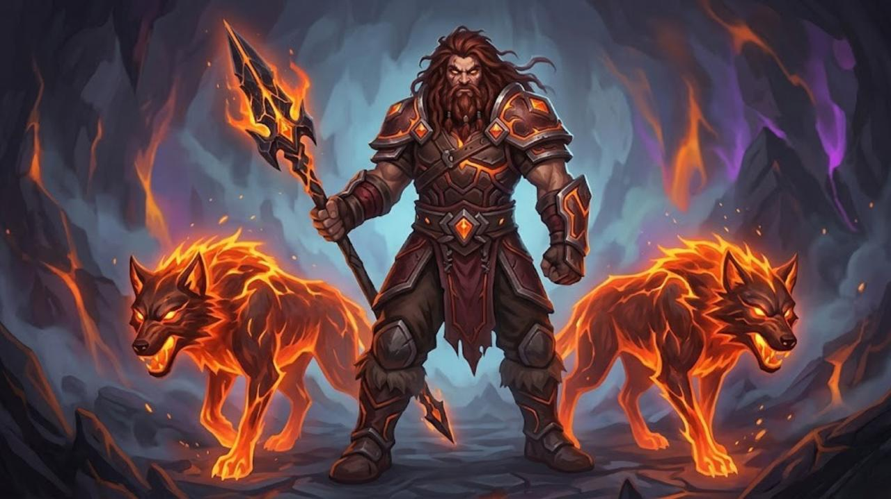

Story Of
The Force Strikers
Commander: Kaelo

Backstory:
Light cavalry or dual-wielding swordsmen whose movements are as fast as a whirlwind. Kaelo trained them to fight while constantly moving—like a deadly dance. They give the enemy no chance to catch their breath.
Specialization:
High-Speed Blitzkrieg. They are a finisher unit that sweeps up the enemy remnants with relentless, lightning-fast attacks.
Kaelo

Backstory:
Raised wild in the active volcanic craters of Bandung, Kaelo possesses a unique ability to communicate with lava creatures. Considered cursed by his village, Lyra found him and brought him into the clan. Here, he trains two lava wolves, Ignis and Pyro, making him the most feared crowd control force on the ground.